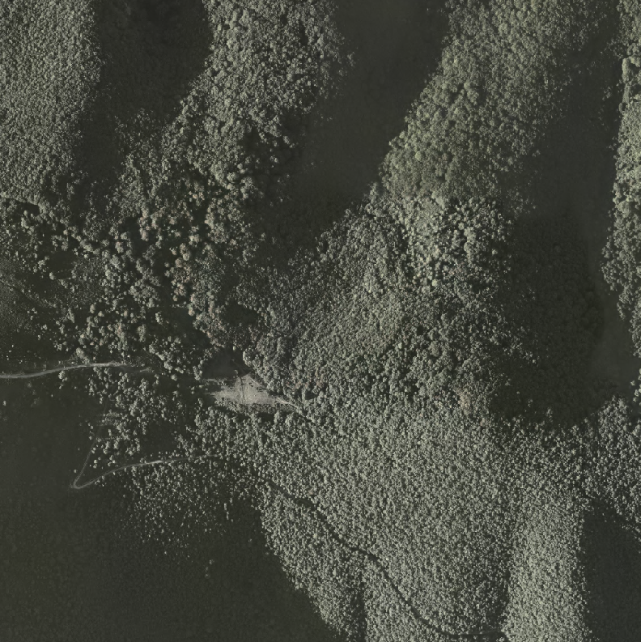
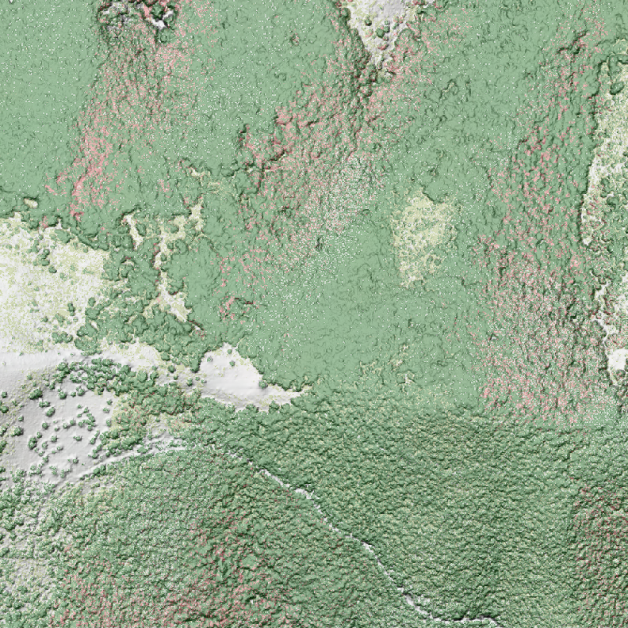
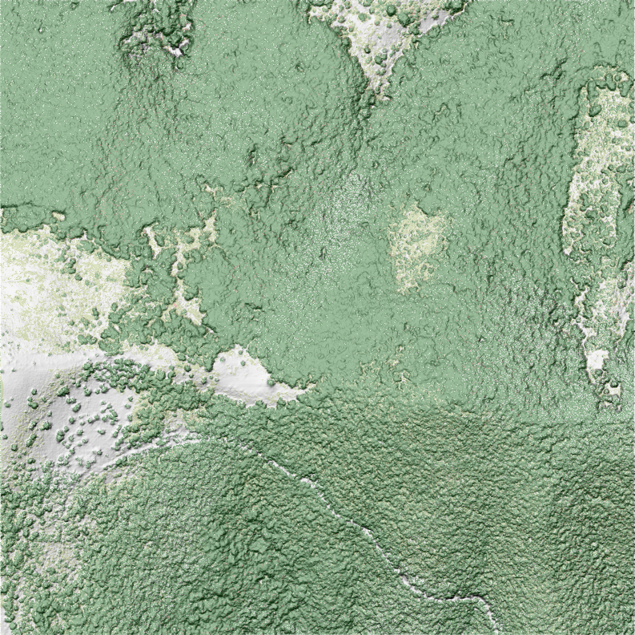
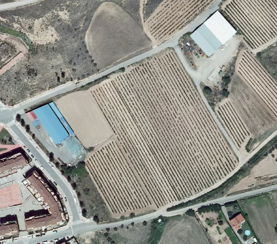
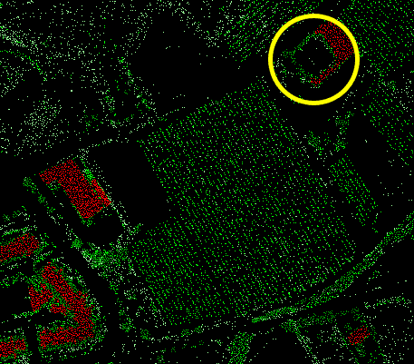
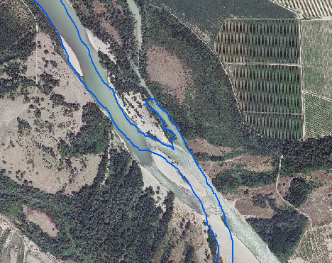
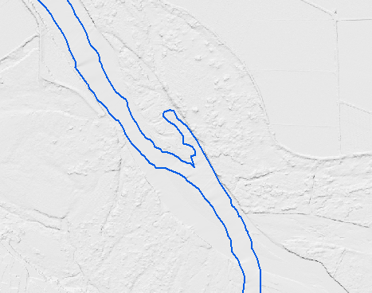

Mejoras
Somos conscientes que no existe ningún proceso automático de clasificación LiDAR perfecto, y por esta razón no hemos pretendido que el nuestro lo sea.
La tecnología también tiene sus limitaciones. Como consecuencia del propio procedimiento de captura, o bien por el comportamiento que ofrecen algunos elementos al reflejar la luz láser, hemos encontrado algunos casos o zonas en los que creemos que resulta conveniente intervenir de forma más específica.
En el diseño de nuestro procesamiento hemos intentado mejorar la calidad de la clasificación hasta donde nos ha sido posible, reduciendo al mismo tiempo al mínimo aquellas zonas que requieren un tratamiento personalizado.
Con objeto de conocer la naturaleza de estos problemas, para así detectar más fácilmente aquellos casos en los que se producen, exponemos a continuación la casuística que los genera, apuntando al mismo tiempo algunos procedimientos para abordar su resolución:
NDVI
En los procesos de clasificación LíDAR, es un hecho que los valores de reflectividad de algunas formaciones forestales, densas y de altura uniforme, se interpretan en muchas ocasiones como edificaciones.
Para evitar esta confusión demasiado común, uno de los procedimientos cuando se dispone de información RGB+Ir, consiste en calcular el * Índice de Vegetación de Diferencia Normalizada* (NDVI) para cada uno de los puntos de la nube.
A partir de esta información y teniendo en cuenta el número de ecos existentes en cada zona, se trata de determinar si la respuesta LiDAR corresponde a una masa vegetal o no.
Este procedimiento ofrece muy buenos resultados en la clasificación, especialmente en aquellas zonas en las que se dispone de unos umbrales RGB+Ir que permiten calcular valores NDVI suficientemente discriminatorios.
No obstante, en muchas ocasiones, existen perturbaciones de la señal que producen una disminución del valor NDVI:
- Contaminación por nubes.
- Efectos debidos a la geometría de la observación (observación fuera del nadir).
- Efectos producidos por la iluminación (sombras).
- Condiciones atmosféricas.
Como consecuencia de ello, la respuesta LiDAR está fuertemente condicionada por aspectos como: la hora de la toma, las condiciones atmosféricas, la posición solar al paso del avión, el ángulo de visión y la anchura de las bandas del sensor, la pendiente y exposición del relieve, el tipo de vegetación, así como su condición fenológica y fisiológica.
Particularmente en relieves montañosos, la radiancia medida registrada por un sensor desde una cobertura de suelo en una ladera de exposición umbría (oculta al sol), puede ser considerablemente menor, que aquella medida desde la misma cobertura del suelo situada en una ladera de exposición solana (expuesta al sol).
Este hecho dificulta el cálculo del parámetro vegetacional NDVI, debido a que el comportamiento espectral de la vegetación se ve alterado por la presencia de sombras (Riaño et. al. 2003, Eastman 2006), dando como resultado que la respuesta de la vegetación afectada por sombras, difiere mucho de la vegetación iluminada, en términos espectrales.
En las imágenes siguientes se pueden observar los efectos de esta circunstancia en la clasificación, comprobando la fuerte correlación que existe entre las zonas de sombra de la imagen y los puntos erróneamente clasificados con el valor 6 Building (Edificación), representados en color rosa.


Para mejorar los resultados iniciales de la clasificación en estas zonas, es necesario actuar sobre los puntos ya clasificados como Edificaciones, sometiéndolos a una nueva revisión en la que se reajusta el umbral NDVI, considerándose al mismo tiempo la cota de los puntos analizados, el número de ecos en cada zona y la intensidad de la señal.
El resultado de esta nueva revisión se puede observar en la imagen siguiente, en la que se puede comprobar visualmente que han quedado corregidos los problemas detectados en la fase anterior.

Naves industriales
Hemos podido observar que los resultados de la clasificación automática en las zonas industriales son bastante limitados, posiblemente debido a la complejidad de los elementos (superficies onduladas, tejados donde existen objetos en la cubierta), al material constructivo de los tejados (superficies metálicas o altamente reflexivas), así como la proximidad entre las construcciones.


Por otra parte, además de los problemas inherentes de la reflectividad, es necesario tener en cuenta que las naves industriales o agrícolas que se ubican en zonas aisladas, no se clasifican de forma correcta, ya que al existir en SIOSE una superficie mínima de polígono, estas se incluyen dentro de polígonos más grandes, por lo que los parámetros que se emplean a la hora de su clasificación para el conjunto de la superficie ocupada por el polígono SIOSE, no son los más ajustados para discriminar las naves industriales que de forma aislada se encuentran en él.
Para su tratamiento y corrección, se ha planteado la identificación y vectorización de dichas construcciones. De esta manera se podría ajustar el proceso automático para clasificar sus puntos dentro de la categoría de edificio.
Hidrografía
A pesar de que en el agua el pulso láser utilizado es absorbido y por tanto no produce retorno (no se obtiene registro de vuelta), existen algunos casos, posiblemente debido al contenido en el agua de partículas en suspensión, en los que sí se registra una reflexión, lo que se traduce en un punto de categoría indeterminada en el interior del curso de agua.
Para evitar este problema, se ha optado por delimitar los cursos de agua a partir de la categoría 'Agua' de la capa SIOSE y aplicar los parámetros de clasificación estándar.
Teniendo en cuenta que la precisión de la capa SIOSE se corresponde con una escala de referencia 1:25.000, algunos márgenes no se ajustan perfectamente al cauce del río con la exactitud que ofrece el LiDAR, esto genera que en las riberas de algunos ríos existan zonas en sus márgenes o en el interior de los mismos, que no se clasifican de forma correcta.
Para abordar la clasificación adecuada de las zonas interiores y marginales de los cursos de agua, se propone utilizar una máscara hidrográfica generada a partir de una cartografía/ortofoto de exactitud mejor que 25 cm, lo que no siempre es posible.
En relación con esta cuestión, es necesario hacer referencia a la existencia de cauces fluviales muy anchos carentes, salvo en ocasiones excepcionales, de flujo hidrográfico. Esta figura, de carácter fluvial, distinta en su naturaleza a una rambla o yasa, y que en todas las cartografías se tiende a representar y codificar como curso hidrográfico en toda su amplitud, es necesario tratarla de forma específica para su correcta clasificación, discriminando el área ocupada por su cauce, normalmente seco, del flujo hidrográfico permanente, si lo hubiera.


Nota: En relación con lo señalado en este apartado, resulta sumamente interesante la publicación "Aplicaciones de la teledetección láser (LIDAR) en la caracterización y gestión del medio fluvial" de Fernando Magdaleno Mas y Roberto Martínez Romero.
Motas
Se ha observado que algunas motas naturales y artificiales están clasificadas como vegetación baja. Se trata de una confusión bastante habitual.
A pesar de que se ha tratado de corregir el problema mediante el uso del infrarrojo, los resultados conseguidos no son del todo satisfactorios, por lo que se recomienda detectar a partir de otras fuentes de información la ubicación de estas estructuras, para una revisión puntual de su clasificación.